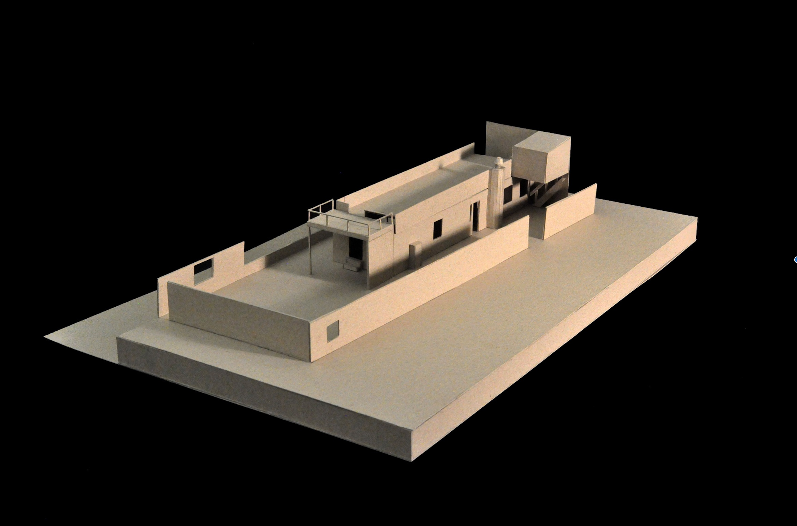
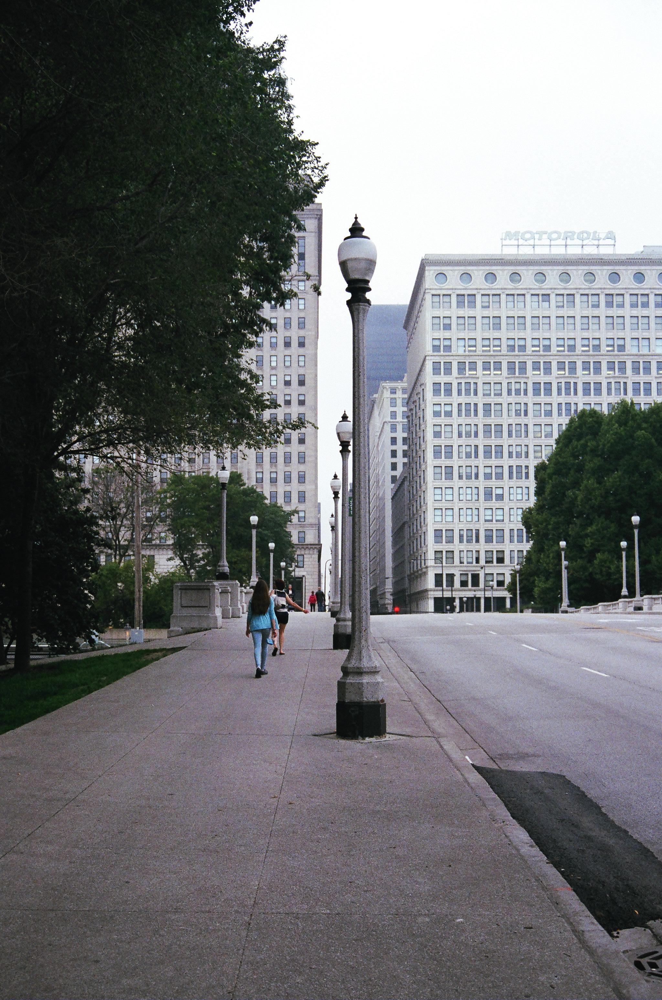

Online Portfolio my work
Cube House Render
Created in November, 2015

I used the Sagrada Familia cathedral as an inspiration for this project, mostly because of it's play with light. I wanted to show how stained glass windows affect lighting both inside and outside of a building. Having studied Le Corbusier's Villa Le Lac recently, I integrated a few of his techniques prevalent in Ronchamp, and simply fused the old cathedral by Antoni Gaudi with le Corbusier's work. I showed only one of the two images as my research image since the cathedral was the only building with a render, and I wanted to emphasize that play of light.
Villa Le Lac
by Ophélie Tousignant and Nicole Postnikov
Created in October, 2015

This is a chipboard model Nicole Postnikov and I made of Le Corbusier's Villa le Lac. Along with this, we drafted scaled section cuts, elevations, and floor plans, based off of the originals which we found during our extensive research of this house.
Walking in Chicago
Created in June, 2014

I took this picture with a film camera on a trip to Chicago. What I found most interesting about it was the balance of nature and city. The trees, which stand in front of the buildings, almost seem to menace the existence of the city (including the Motorola building) and take over what man made. It's a comment on the fact that nature wins eventually. Despite this, the people keep moving forwards, guided by the lamposts they made for themselves.
Search
Categories
About Me
First-year architecture student at Carnegie Mellon University.